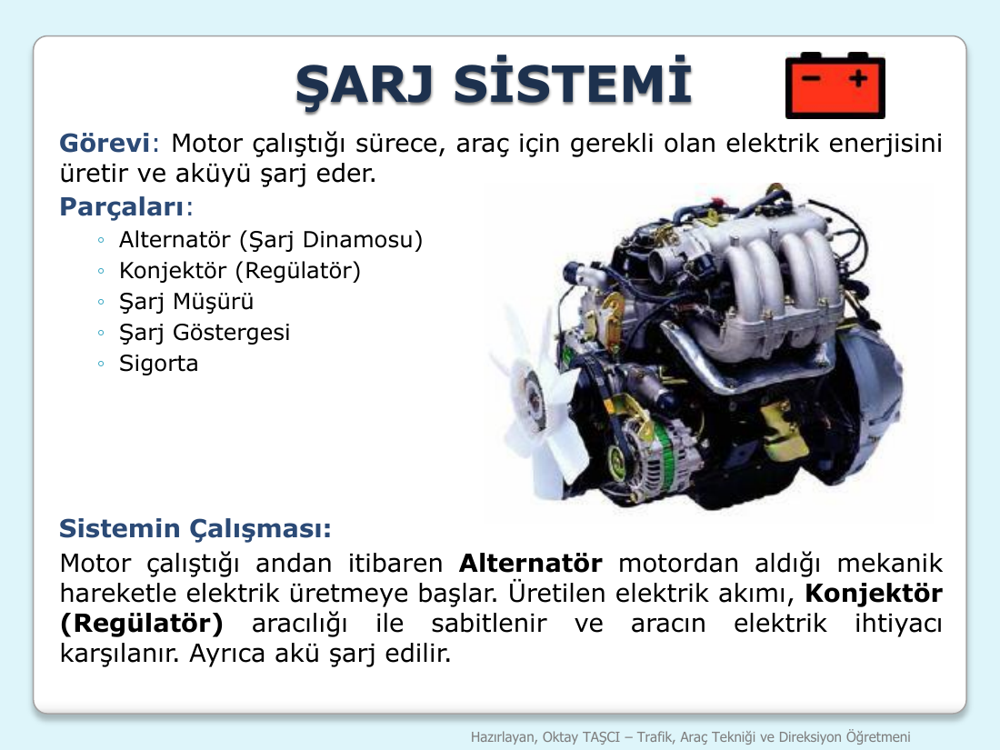
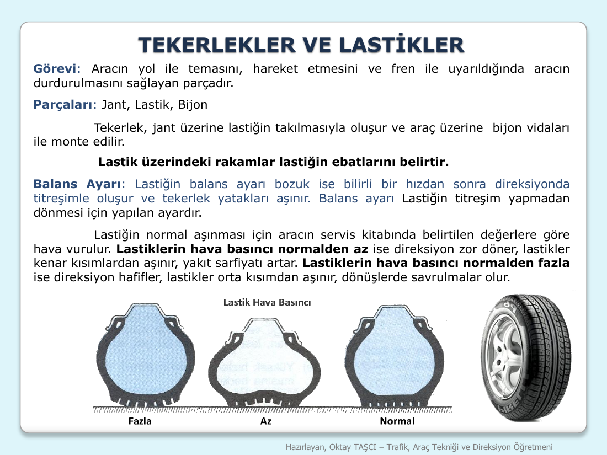

Şarj Sistemi — Charging System
Last updated: 2026-04-13
Slides covered: Full şarj sistemi slide (görev + parçaları + sistemin çalışması)
1. Overview — Görev (Purpose)
Şarj sistemi: Motor çalıştığı sürece, araç için gerekli olan elektrik enerjisini üretir ve aküyü şarj eder.
(The charging system, as long as the engine runs, produces the electrical energy needed by the vehicle and charges the battery.)
The şarj sistemi is what keeps the battery full while the engine is running. It's the mirror counterpart of the marş sistemi:
| System | Direction | Key part |
|---|---|---|
| Marş sistemi (Starter system) | Akü → Motor (Battery → Engine — uses stored power to crank the engine) | Marş motoru (starter motor) |
| Şarj sistemi (Charging system) | Motor → Akü (Engine → Battery — uses the running engine to refill the battery) | Alternatör (alternator, also called şarj dinamosu) |
Without the şarj sistemi, your battery would drain within minutes of driving — headlights, wipers, radio, ignition, and lighting would all pull from the akü with no replenishment.
2. SLIDE — Şarj Sistemi (Full slide)

Slide title: ŞARJ SİSTEMİ
What the slide said
Görevi:
"Motor çalıştığı sürece, araç için gerekli olan elektrik enerjisini üretir ve aküyü şarj eder."
Parçaları:
- Alternatör (Şarj Dinamosu)
- Konjonktör (Regülatör)
- Sigorta
- Şarj Müşürü
- Şarj Göstergesi
- Vantilatör Kayışı
- Akümülatör
- Kontak Anahtarı
Sistemin Çalışması:
"Motor çalıştığı andan itibaren Alternatör elektrik üretmeye başlar. Üretilen elektrik akımı, Konjonktör (Regülatör) aracılığıyla ateşleme ve aydınlatma sistemlerinin elektrik beslemesini sağlar. Ayrıca akü şarj edilir."
Clean English explanation
When the engine starts running, a belt connects the crankshaft to the alternatör, making the alternator spin. A spinning alternator generates electricity (mechanical → electrical — the opposite direction of the starter motor). That electricity then flows through the konjonktör (regulator) which controls the voltage so the system isn't over- or under-charged. The regulated electricity is then used in two ways:
- Powers the ignition and lighting systems (ateşleme ve aydınlatma) live while driving
- Recharges the akü so it's ready for the next start
So the akü is really only used for the first few seconds of driving (to start the engine). After that, the alternator takes over and the akü is just being topped back up.
3. The 8 Parts (Memorize this list!)
| # | Turkish | English | Role |
|---|---|---|---|
| 1 | Alternatör (Şarj dinamosu) | Alternator | Generates electricity from engine rotation |
| 2 | Konjonktör (Regülatör) | Regulator | Controls voltage, prevents overcharge |
| 3 | Sigorta | Fuse | Protects circuit from overload |
| 4 | Şarj Müşürü | Charge sender / sensor | Measures charging status |
| 5 | Şarj Göstergesi | Charge indicator | Dashboard gauge / warning light |
| 6 | Vantilatör Kayışı | Fan belt | Transfers engine rotation to alternator |
| 7 | Akümülatör | Battery | Stores the generated electricity |
| 8 | Kontak Anahtarı | Ignition switch | Connects/disconnects the system |
Component notes
- Alternatör (Şarj dinamosu) — this part has two Turkish names. "Alternatör" is modern, "şarj dinamosu" is older. Both appear on exams.
- Konjonktör (Regülatör) — also has two names. Both mean the same voltage regulator component.
- Vantilatör kayışı — this single belt often drives both the alternator AND the water pump (cooling). That means if it breaks, both the şarj sistemi AND the soğutma sistemi fail at the same time.
- Akümülatör — the same akü mentioned in marş sistemi. The two systems share this component.
- Kontak anahtarı — also the same as in marş sistemi. Shared component.
4. How the system flows (Sistemin Çalışması)
Motor çalışır (engine runs)
│
▼
Vantilatör kayışı (fan belt) transfers rotation
│
▼
ALTERNATÖR spins → generates electricity (AC)
│
▼
KONJONKTÖR (REGÜLATÖR) regulates voltage
│
├─▶ AKÜYÜ ŞARJ EDER (charges the battery)
│
└─▶ ATEŞLEME + AYDINLATMA sistemlerini besler
(powers ignition + lighting systems)
The ŞARJ LAMBASI (Charge Warning Light)
The red şarj lambası on the dashboard is the driver's warning. Rules:
- When you first turn the key to ON, the charge light turns on (normal)
- When the engine starts running, the alternator starts working and the charge light turns off (normal)
- If the light stays on OR turns on while driving, the charging system has failed → stop the car and check the alternatör and vantilatör kayışı
What happens if the vantilatör kayışı breaks (critical exam scenario)
If the belt snaps while driving:
1. Alternator stops spinning → no more electricity generation
2. Battery starts draining (no recharge, and electricity is being used)
3. Şarj lambası turns on (red warning)
4. If the same belt also drives the water pump → engine starts overheating
5. You have maybe a few minutes of driving before the battery dies OR the engine overheats
Correct action: Pull over, stop the engine, call for roadside assistance or tow. Do not keep driving.
4B. Hoca's Live Class Additions (2026-04-13)

Vantilatör Kayışı tension test (practical maintenance check)
The hoca gave a very practical diagnostic for checking the fan belt:
"Çok gergin olmayacak. Çok yumuşak da olmayacak. Parmağınla üzerine dokunduğunda, lastiğin bir santim içeriye doğru esneyecek esneklikte olması lazım."
The 1 cm rule: Press on the belt with your finger. It should give (esnemek = stretch/flex) about 1 cm inward and spring back.
| State | Test result | Consequence |
|---|---|---|
| Correct tension | Presses down ~1 cm with finger pressure | Alternator spins properly, no noise |
| Too tight (çok gergin) | Doesn't give at all, hard as metal | Belt snaps (kopar) under stress |
| Too loose (çok gevşek / yumuşak) | Sags more than 1 cm, feels soft | Belt slips on the pulley, alternator doesn't spin enough |
Squeaking noise from the belt area
"Bazen araçlar çalışınca çok gergindir, ses gelir bir yerden. Fışık böyle bir değişik ses, lastik seti gibi."
If you hear a high-pitched squeaking or whistling sound when the engine is running (especially at startup or under acceleration), it's usually the vantilatör kayışı — either too tight, too loose, or worn. Time to inspect and replace.
Şarj lambası (Charge light) startup behavior — what's NORMAL
"Arabayı çalıştırdım. Bir, iki saniye yanıyor, tıpkı sönüyor. Yanıp sönüyorsa zaten hiçbir sıkıntı yok."
Normal behavior at startup:
1. You turn the key to ON → şarj lambası turns ON (red, because engine isn't running yet → no charging yet)
2. Engine starts → alternator spins → şarj lambası turns OFF within 1–2 seconds
3. Drive normally → lamp stays off
Abnormal behavior (danger):
- Lamp stays ON after engine starts → charging system failure, STOP the car
- Lamp turns ON mid-drive → alternator/belt failure, STOP the car
So a brief 1–2 second flash at startup is normal and expected — don't panic if you see it.
⚠️ Two-name exam trap strategy
The hoca specifically warned about this exam trap that students miss:
"İki tane ismi olanlara dikkat edelim. Ezber yaparken sadece bir ismi ezberliyor, ikinci isme dikkat etmiyor. E adam bu sefer bu sefer onu yazmıyor da ikincisini yazıyor. 'Böyle bir şey mi vardı ya? Şarj dinamo vardı, regülatör diye bir şey mi vardı?' Böyle bir sıkıntıya düşüyor adaylar."
Translation: Several şarj sistemi parts have two valid Turkish names. Students memorize one name, skim the other, then panic on exam day when the question uses the alternate name.
The two-name components in şarj sistemi:
| Primary name | Alternate name (exam trap!) |
|---|---|
| Alternatör | Şarj Dinamosu |
| Konjonktör | Regülatör |
| Akü | Akümülatör |
The rule: When you see an exam option with a name you don't immediately recognize, check if it's the alternate name for a part you already know. All six names in the table above are valid şarj sistemi components. Don't eliminate "regülatör" just because you only memorized "konjonktör."
This trap isn't just in şarj sistemi — it applies to any component with two names across all of Araç Tekniği (e.g., şaft ↔ kardan mili, yakıt deposu ↔ depo, aks ↔ dingil, etc.).
5. Why this matters for the exam
Very high-frequency question types:
-
"Şarj sisteminin görevi nedir?"
→ Motor çalıştığı sürece aracın elektrik enerjisini üretmek ve aküyü şarj etmektir. -
"Aracın elektrik enerjisini üreten parça hangisidir?"
→ Alternatör (şarj dinamosu) -
"Mekanik enerjiyi elektrik enerjisine çeviren parça?"
→ Alternatör -
"Alternatörü hangi parça döndürür?"
→ Vantilatör kayışı (fan belt) -
"Vantilatör kayışı koparsa ne olur?"
→ Alternator stops, battery stops charging, engine overheats (belt also drives water pump in most cars), şarj lambası yanar -
"Şarj lambası yandığında ne yapılmalı?"
→ Stop the car, check alternator + fan belt -
"Aşağıdakilerden hangisi şarj sisteminin parçası değildir?" (Which is NOT a part?)
→ They'll list the 8 parts above + 1 trap (karbüratör, enjektör, radyatör, yağ pompası, etc.) -
"Gerilim regülatörü hangi sistemde bulunur?"
→ Şarj sisteminde (konjonktör = regülatör)
6. Memorize These (Charging System)
Şarj sisteminin görevi: Motor çalıştığı sürece aracın elektrik enerjisini üretmek ve aküyü şarj etmektir.
(The charging system's job is to produce the electrical energy needed by the vehicle and charge the battery as long as the engine runs.)Alternatör: Mekanik enerjiyi elektrik enerjisine çeviren parçadır.
(The alternator converts mechanical energy into electrical energy.)Alternatörü vantilatör kayışı döndürür.
(The fan belt rotates the alternator.)Konjonktör (regülatör) gerilimi ayarlar.
(The conjunctor/regulator adjusts the voltage.)
The golden contrast:
Marş motoru = elektrik → mekanik
Alternatör = mekanik → elektrik
7. Consolidated Exam Vocabulary — Charging System
| Turkish | English | Quick meaning |
|---|---|---|
| Şarj sistemi | Charging system | The whole system |
| Şarj | Charge / charging | Generic |
| Şarj etmek | To charge | "aküyü şarj eder" |
| Görev | Job / duty | "Its görev is…" |
| Motor çalıştığı sürece | As long as the engine runs | Key phrase |
| Motor çalıştığı andan itibaren | From the moment the engine starts | Variant phrase |
| Gerekli olan | That is needed | Exam-flavored phrasing |
| Üretmek | To produce / generate | What the alternator does |
| Üretir | It produces | "Elektrik üretir" |
| Üretilen | Produced / generated | Passive participle |
| Aküyü şarj eder | Charges the battery | Common answer phrase |
| Alternatör | Alternator | The electricity generator |
| Şarj dinamosu | Charge dynamo | Older name for alternator |
| Konjonktör | Conjunctor / regulator | Voltage regulator |
| Regülatör | Regulator | Same thing as konjonktör |
| Gerilim | Voltage | Electrical pressure |
| Sigorta | Fuse | Protects from overcurrent |
| Şarj müşürü | Charge sender / sensor | Feeds data to the gauge |
| Şarj göstergesi | Charge indicator | Dashboard gauge |
| Şarj lambası | Charge warning light | The red dashboard light |
| Vantilatör kayışı | Fan belt | Drives alternator (and usually water pump) |
| Kayış | Belt | Generic belt |
| Akümülatör | Battery | Same as akü |
| Kontak anahtarı | Ignition switch | Shared with marş sistemi |
| Aracılığıyla | By means of / through | "Regülatör aracılığıyla" |
| Besleme | Supply / feed | Electrical supply |
| Sağlamak | To provide / supply | "Beslemesini sağlar" |
| Ayrıca | Also / additionally | Transition word |
| Ateşleme sistemi | Ignition system | Lights the fuel/air mixture |
| Aydınlatma sistemi | Lighting system | Headlights, interior, etc. |
| Elektrik akımı | Electrical current | The flow of electricity |
| Çeviren | That converts | "mekanik enerjiyi elektrik enerjisine çeviren" |
| Döndürmek | To rotate / spin | What the belt does to the alternator |
| Kopmak | To snap / break | Fan belt breaking fault |
| Yanmak | To be lit (light) / to burn | "Lamba yanar" = the light comes on |
8. Cross-references
- Mirror system: 03-marş-sistemi.md — marş sistemi uses the akü, şarj sistemi refills the akü. Together they form the complete battery-power cycle.
- Shared components: The akü and kontak anahtarı appear in BOTH marş sistemi and şarj sistemi — they're shared parts of the broader electrical system.
- Interaction with cooling: In most cars, the vantilatör kayışı drives both the alternator AND the water pump, so a broken belt fails both the şarj sistemi and the soğutma sistemi simultaneously. This is a favorite multi-system exam trap.
- Warning lights: The şarj lambası (charge warning) is one of the three critical "stop immediately" dashboard warnings, along with the oil pressure light (see 02-yağlama-sistemi.md) and engine temperature warning.